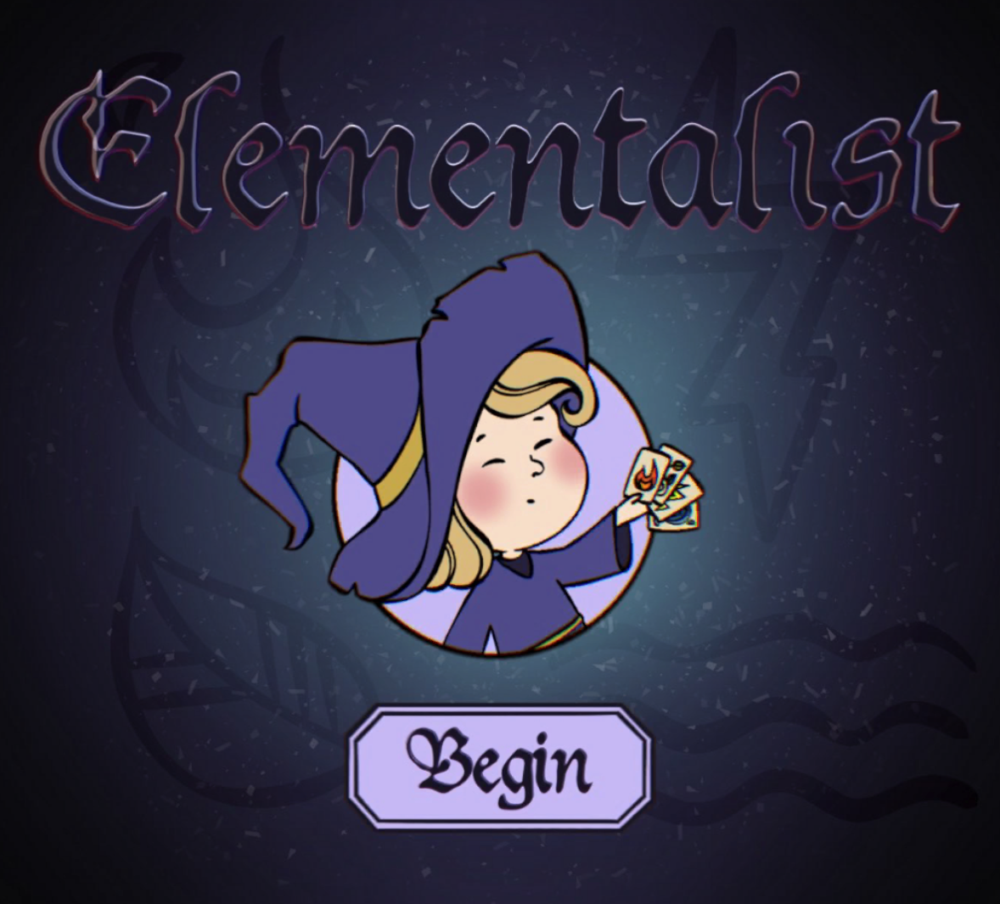
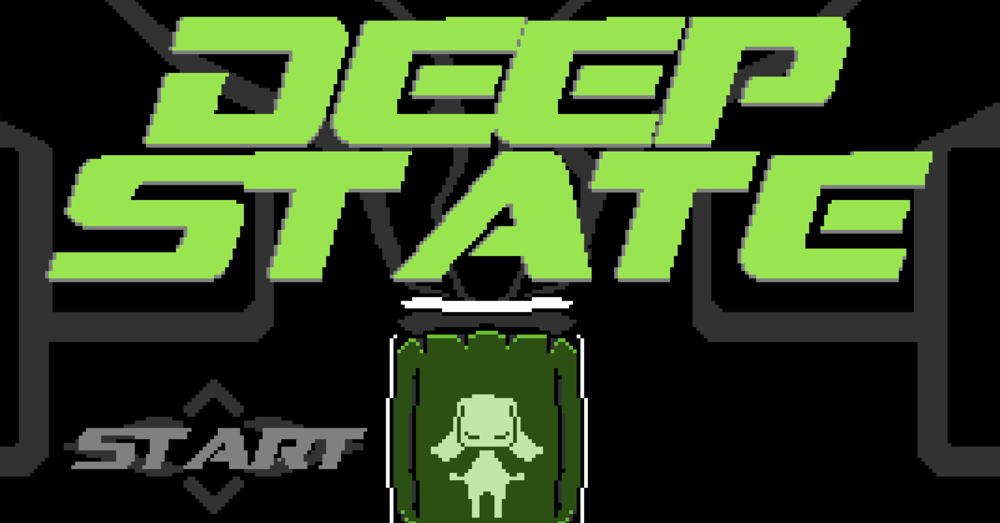
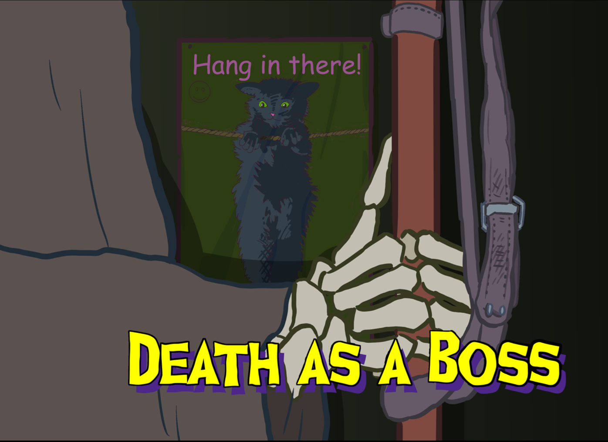
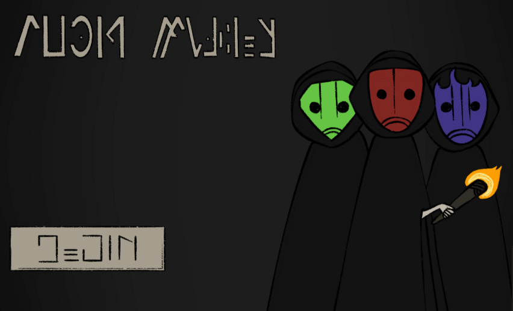
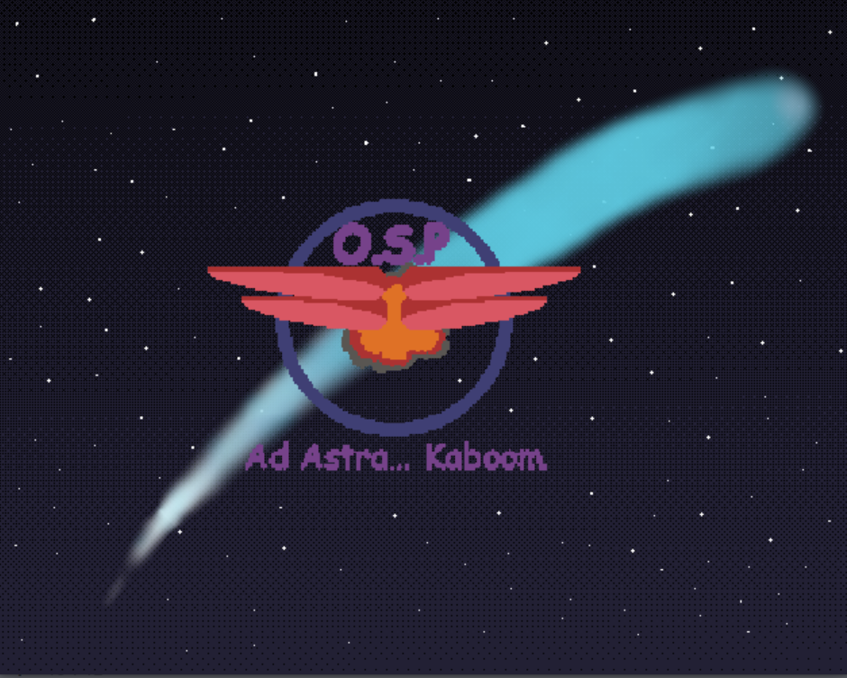
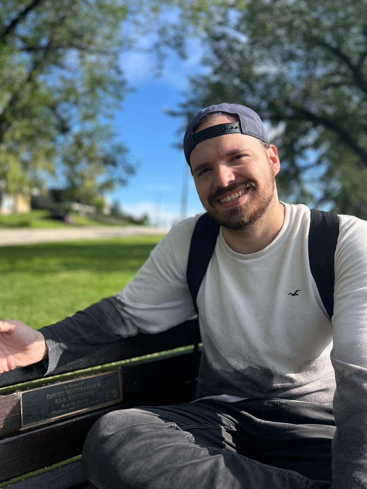

Game Jams
Elementalist
A card-based elemental battle game built for a BCI game jam using the Axon-R brain-computer interface headset - designed for children with cerebral palsy. I handled game design, narrative, development, and production.
- Game Designer
- Developer
- Unity

Deep State
A metroidvania game jam entry built in two weeks. I designed a cohesive interconnected world that communicates story through spatial layout and environmental detail - exploration gating, interconnected rooms, and gauntlets hidden beneath a minimalist surface.
- Level Designer

Death as a Boss
An investigative point-and-click visual novel. I designed the narrative and gameplay - building a story where player actions matter while the "right" choice remains deliberately ambiguous. Clue-driven branching outcomes with full player-led moral judgement.
- Writer
- Narrative Designer

Void Walker
A 48-hour game jam prototype exploring environmental storytelling and ability-driven level design within an isometric 2D space. Player progression was tied to discovering masks that granted traversal abilities and shaped environmental interaction - world design built to imply story through gameplay rather than exposition.
- Level Designer

O.S.P — Onomatopoeia Space Program
A 2D grid-based puzzle game where you control an interplanetary rover using our patented Onomatopoeic Control System. I designed the puzzle levels, pacing, and difficulty curve.
- Level Designer
- Puzzle Designer

Writing
A selection of narrative design documents, scripts, short fiction, and critical writing. Click any piece to read.
Nothing Like Home
A light-hearted short story exploring loneliness, deception, and a need for control - after all, nothing feels like home.
Branching Dialogue Sample — Death as a Boss
Case 2 script extract from Death as a Boss. A branching dialogue sample demonstrating clue-driven narrative structure and player-led interrogation paths.
Last Shift
A short story about Mara, a nurse, and Aiden, an AI system navigating the final hours of a night shift. Written as part of a Narrative Game Design workshop exercise.
Critical Writing — Game & TV Analysis
A collection of critical essays on games and television.
About Me
I'm a Narrative and Level Designer with a background in creating player-driven experiences across game jams and various other projects. My work spans visual novels, metroidvania level design, environmental storytelling, and general game design. I was pulled into level design and narrative story telling through Dark Souls - now I can only hope to have such an impact on someone through my work.
Aside from video games I enjoy board games, playing instruments and tennis. I travel A LOT and never spend much time in one place. Currently, I'm actively looking for opportunities in indie game development.
My Resume